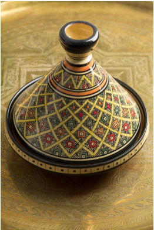

Artisanat Marocain — Trésors du Maroc
Bienvenue sur notre boutique dédiée à l'artisanat marocain traditionnel. Chaque produit est fabriqué à la main par des artisans locaux, perpétuant un savoir-faire millénaire transmis de génération en génération.
Nos Catégories

Poterie & Céramique
Tajines, assiettes et vases faits à la main dans les ateliers de Fès.
Découvrir la poterie marocaine →
Textiles & Tissage
Tapis berbères, djellabas et caftans traditionnels du Maroc.
Découvrir les textiles marocains →
Cosmétiques Naturels
Huile d'argan, savon beldi et eau de rose — secrets de beauté du Maroc.
Découvrir les cosmétiques naturels →Explorer notre artisanat
Plongez dans l'univers de l'artisanat marocain en explorant nos catégories :